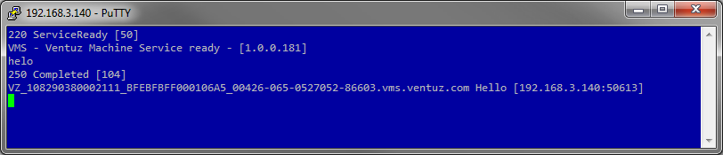
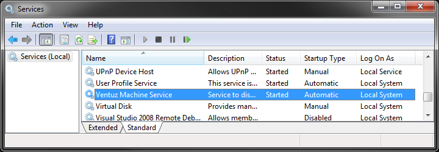
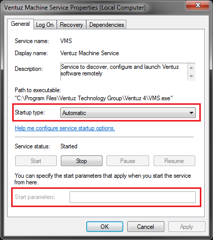
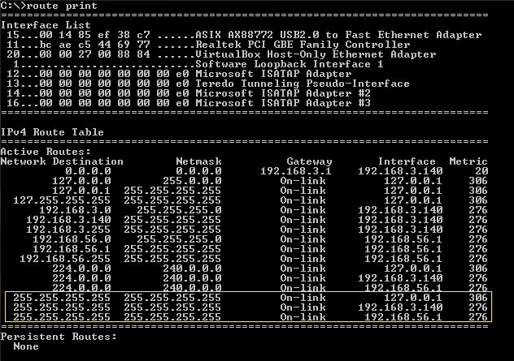

The Ventuz Machine Service (VMS) is a TCP server that runs independently of any Ventuz Designer, Runtime or Director process. It gives remote applications - as well as a local Ventuz Director - access to certain information about the Ventuz rendering system. VMS can perform several tasks:
There are three common practices where VMS tasks are taking place:
VMS runs as a multi-client TCP server on port 20405 (Ventuz 5 VMS listens on port 19405. A list of ports used by Ventuz can be found here: VentuzIpPorts). The actual communication protocol is text based (UTF-8) and accepts simple human readable commands. A user can use a telnet client like Putty or Microsoft Telnet Client to connect to VMS.
After logging into VMS it displays a welcome message showing the version number of the VMS server.

Typing HELP displays all available commands:
Some simple commands can be executed by command line (telnet). More complex commands (such as uploading new configurations cannot be accomplished by command line, because the data length to be transferred must be known and entered in the command line. It is recommended to perform those tasks programmatically for example with the VMSClient .net class provided in the Remoting4 SDK. The SDK also includes a class VMSDiscovery to locate machine in the network and monitor their states.
To configure the VMS administration permissions are required. Press the Windows key and enter services.msc into the Search programs and files field. Press ENTER. The Services administration control panel starts up.

Locate Ventuz Machine Service and double click on it to open the service properties.

Disable VMS
To disable the service generally turn the Startup type to Disabled. Press the Stop button. VMS will not be started as service anymore. To re-enable a disabled VMS, just turn the Startup type back to Automatic and press the Start button.
Configure IP Restrictions
To apply any IP restrictions to the service, make sure that the Startup type is in Automatic mode. Stop the service if it is currently running by pressing the Stop button. Now enter the IP restriction command line argument described below into the Start parameters field. Press the Start button to start the service again.
The VMS can run in three different modes:
VMS accepts two command line arguments to force the mode. If no mode option is applied, VMS determines if the process environment is a SYSTEM account (no windows session) or a USER account (windows session available). If VMS is started it determines if any other instance is already running and decides how to proceed: choose the correct mode or exit with a proper return code. This technique allows VMS clients (such as the Ventuz Director) to ensure a local VMS to run. The following table shows all possible starting combinations:
| SYSTEM | USER | |||
|---|---|---|---|---|
| <none> | <none> | -app | -notify | |
| No VMS is running | Service | Application | Application | Notification |
| VMS Service is running | exit 2 | Notification | Notification | Notification |
| VMS Application is running | exit 2 | exit 1 | exit 1 | exit 1 |
| VMS Notification is running | Service | exit 1 | exit 1 | exit 1 |
If VMS runs in Notification mode a small icon in the Windows Notification Bar displays the current state of the VMS. The state reported here is similar to the state returned by the STATE command.
| Error | xxxx0000 | No connection to Ventuz Runtime or Designer | |
| Warning | 0000xxxx | Connection Ventuz Runtime or Designer, but no renderer/project loaded | |
| Ok | 00000000 | Ventuz is up and running. | |
| VMS Service is not running. No connection from VMS notification to VMS service. |
The user can right click onto the notification icon in order to perform some actions:
VMS is responsible for finding Ventuz projects on the system that it is running on. Remote application may only know the Project ID but want to ensure that all system in a Cluster run the same project. To make this possible VMS contains Configured Project Folders to search for project files. Right after VMS starts (usually on system startup) the first scan is initiated. VMS is now able to resolve a ProjectID to an absolute location on disk. A remote client can now use the project related commands (like START) to address a project. If the fullpath of a project is know, a client can use this instead.
If a project with the ID appears multiple times on disk, VMS is unable ti distinguish between them. Project referencing by ProjectID is not possible in that case!
If new projects are copied to remote systems, VMS must rescan the project folders. The current implementation does not scan automatically! A remote client has to initiate a re-scan by issuing the SCAN command.
The VMS is installed as a Windows Service without any IP restriction by default. This allows other users in the same network to access the VMS. To avoid unwanted or accidental access to VMS and running Ventuz processes you can apply IP restrictions to gain exclusive access to VMS.
VMS broadcasts status and version information every 5 seconds in order to allowed remote clients to monitor all machines with a network. The UDP packets are sent to 255.255.255.255 in IPv4 networks and to 255:255:255:255:255:255:255:255 in IPv6 networks. The VMSDiscovery class can force all VMS services in the network to send their heartbeat immediately if they receive a discovery request. This request is sent by calling the method Discover()
Please note that VMS uses IP Broadcast to send its heartbeat packets (or discover requests). Microsoft Windows routing rules restrict broadcasting packets if your system has multiple connected IP interfaces with the same metric only the first entry in the routing table for one metric value will transfer the broadcasted packets. You can see the current routing tables by entering the following command in the windows command prompt:
route print

In this routing table only the interfaces with the addresses 127.0.0.1 (loopback) and 192.168.3.140 will transfer the VMS broadcast messages. The interfaces with the address 192.168.56.1 won't transfer the broadcast packets.
This Microsoft support page explains how to change the metric of network adapters.
The HELP displays a list of all available commands with a short description of the arguments. An argument shown in chevrons (<>) are mandatory, where arguments in square brackets ([]) are optional. If multiple arguments appear separated by the vertical line (pipe |) means a choice.
HELO (short for hello) return a message that contains the unique system identifier (SystemID), the version number of the VMS and the IP endpoint of the connected client.
HELO 250 Completed [104] VZ_108290380002111_BFEBFBFF000106A5_00426-065-0527052-86603 Hello [192.168.3.140:50613]
The unique system identifier is used to identify a physical hardware within the Ventuz network regardless of its IP address or IP addresses. The VMS Discovery uses the SystemID to identify a system if it appears multiple times (multiple IP addresses) or the IP address is changing. The SystemID is constructed by several system identifier separated by an underscore sign (_). Not all system provide proper unique values for Mainboard-serial or Processor-ID. The combination of multiple identifiers should make this string usable for us:
The VMSDiscovery class has a static method GetLocalSystemId() to retrieve the local SystemID. Remote software uses this to filter its own local VMS service against the remote systems.
The STATE command return the current status of the VMS-2-Ventuz connection.
STATE 211 Status [37] Error [00040000]: ErrorDisconnected
VMS can report three different states:
| Error | xxxx0000 | No connection to Ventuz Runtime or Designer | |
| Warning | 0000xxxx | Connection Ventuz Runtime or Designer, but no renderer/project loaded | |
| Ok | 00000000 | Ventuz is up and running. |
The return values is matches the enumeration Ventuz.Remoting4.ClusterState.
If the state is ok the INFO command returns an XML that contains information about the currently running Ventuz. The data are equal to the Ventuz.Remoting4-VentuzInfo structure in Remoting4
INFO
200 Ok [636]
<VentuzInfo>
<Version />
<MachineName>LOCAL(VBOX-DOC2013)</MachineName>
<Mode>Designer</Mode>
<EditionName>Ventuz 4 V4.00.00 x64</EditionName>
<GroupID>0</GroupID>
<MachineID>0</MachineID>
<RateNum>60000</RateNum>
<RateDen>1000</RateDen>
<PipeModes>
<PipeMode>OffScreen</PipeMode>
</PipeModes>
<ProcessID>1292</ProcessID>
<ProcessGUID>a6cd8d0d-c2d3-4d88-b1ef-54cb3593df75</ProcessGUID>
<SystemID>VZ_108290380002111_BFEBFBFF000106A5_00426-065-0527052-86603</SystemID>
<ProjectGUID>15e6698c-7726-4be1-9ede-3ee1c58d9005</ProjectGUID>
<ProjectName>Hockey</ProjectName>
</VentuzInfo>
Use ID to query the short ID information stored in the Ventuz configuration. ID reads the Ventuz Configuration from disk and return the values while INFO returns the currently used values - the machine id for example can be overwritten by the Ventuz Designer UI or by the live option .VZ.ID. As long the live option has not been saved, ID still return the previously stored information.
ID 200 Ok [20] VBOX-DOC2013, 0, 0
The ID command can also change the persistent values when arguments are specified. Changing the values does not affect a running system. It only saves a new Ventuz Configuration that is load when Ventuz is restarted!
ID NEW-NAME 1 2 200 Ok [17] ID has been set ID 200 Ok [16] NEW-NAME, 1, 2
These commands get or set the VMS configuration, e.g. configure project paths.
GETCFG 200 Ok [130] <VMS> <ProjectPath>C:\Users\Public\Documents\Ventuz4\Projects</ProjectPath> <ProjectPath>G:\PROJECTS</ProjectPath> </VMS>
The CLOCK command returns the current value of the cluster clock. The cluster clock is a frame counter that if multiplied by the VentuzInfo/RateNum and divided by VentuzInfo/RateDen shows the rendering time in seconds. The CLOCK command via VMS should be used to determine if the renderer is still rendering frames (values counts up). For real-time queries one should use the corresponding call in Remoting4
CLOCK 250 Completed [7] 23470
The KILL command kills the process with the ID shown in VentuzInfo/ProcessID, where the KILLALL command kills all Ventuz rendering processes (Ventuz.exe or VentuzPresenter.exe)
The is no warning or user query to deny the kill requests - so use this commands very carefully!
The INST command gives information about the installed Ventuz version. Currently Ventuz doesn't support side-by-side installation of different Version, so only one installation will be displayed. Use this command to determine installation paths and version.
INST
200 Ok [390]
<Installations>
<Installation Version="4.00.00" Build="181">
<InstallationDir>C:\Program Files\Ventuz Technology Group\Ventuz 4\</InstallationDir>
<DesignerPath>C:\Program Files\Ventuz Technology Group\Ventuz 4\Ventuz.exe</DesignerPath>
<RuntimePath>C:\Program Files\Ventuz Technology Group\Ventuz 4\VentuzPresenter.exe</RuntimePath>
</Installation>
</Installations>
The SCAN command forces VMS to re-scan its configured project folder for Ventuz projects.
SCAN 200 Ok [18] Scan started ...
Use SCANSTATE to check if the scan has been completed.
SCANSTATE 250 Completed [16] Scan completed
The PROJ command list all Ventuz project found in the configured project folders. An XML document is returned containing all information about the projects.
Please note that older project files (pre Ventuz 4) cannot provide all information! To solve this, import the project into Ventuz 4 and save it in the new file format.
PROJ
200 Ok [44129]
<Projects>
<Project VPR="false" ID="96077cdf-573b-4f5e-8869-5dcb6e1c4768" FullPath="C:\Users\Public\Documents\Ventuz4\Projects\__HELP__\VentuzHelp\Help1.vzp">
<VentuzVersion>4.0.0.0</VentuzVersion>
<Name>Help1</Name>
<Author>Ventuz</Author>
<Copyright>2019 Ventuz Technology</Copyright>
<Category>Ventuz</Category>
<ThumbnailBase64>iVBORw0KGgoAAAA..........ggg==</ThumbnailBase64>
</Project>
...
</Projects>
The SCENES command allows the client to query all available scenes of a project. A comma separated list of scene identities is returned. The project to query is specified by its ProjectID or by the fullpath to its project file (.vzp)
scenes 15e6698c-7726-4be1-9ede-3ee1c58d9005 200 Ok [216] Templates/FS_LineUp, Templates/FS_Promo, Templates/FS_Scoreboard, Templates/InGame
To receive the SceneModel of a scene use the SM command. Two parameters must specify the project and the scene identity (filename without file extension). The project can be specified by its ProjectID or by the fullpath of the project file (.vzp)
SM 15e6698c-7726-4be1-9ede-3ee1c58d9005 Templates/FS_Promo
200 Ok [44778]
<SceneModel DisplayName="templates/fs_promo" ThumbnailArea="0,0,1,1" Thumbnail="iVBORw0KGgoA........JRU5ErkJggg==" xmlns="http://www.ventuz.com/Ventuz/SceneModel/1.0">
<SceneModel.DataModel>
<DataModel>
<Animation AnimationName="FS_Promo" Name="FS_Promo" Label="Control" />
</DataModel>
</SceneModel.DataModel>
<SceneModel.DataModelScene>
<DataModel>
<Animation AnimationName="FS_Promo" Name="FS_Promo" Label="Control" />
</DataModel>
</SceneModel.DataModelScene>
<SceneModel.Animations>
<AnimationModel Name="FS_Promo">
<AnimationModel.DataModel>
<DataModel>
<String Default="7:30" MinLines="1" MaxLines="1" RegEx="" Name="Time" Label="Time" Description="Event start time." Mode="RW" />
<String Default="VHL NIGHT" MinLines="1" MaxLines="1" Name="Title" Label="Event" Description="Event title" Mode="RW" />
<String Default="LIVE" MinLines="1" MaxLines="1" Name="FirstLine" Label="FirstLine" Description="FirstLine" Mode="RW" />
<String Default="Event Location" MinLines="1" MaxLines="1" Name="SecondLine" Label="SecondLine" Description="SecondLine" Mode="RW" />
<String Default="City" MinLines="1" MaxLines="1" Name="ThirdLine" Label="ThirdLine" Description="ThirdLine" Mode="RW" />
<String Default="NIGHT" MinLines="1" MaxLines="1" Name="LogoSubtitle" Label="3D league subtitle" Description="3D subtitle below the league logo" Mode="RW" />
<Visual Images="True" Textures="True" Movies="True" Scenes="True" Required="True" Name="Visual01" Label="Left_TeamVisual" Description="The left team visual commonly used for the home team logo." Mode="RW" />
<Visual Images="True" Textures="True" Movies="True" Scenes="True" Required="True" Name="Visual02" Label="Right_TeamVisual" Description="The rightt team visual commonly used for the guest team logo." Mode="RW" />
<Visual Images="True" Textures="True" Movies="True" Name="Visual" Label="BGD_Still" Description="Background image" Mode="RW" />
</DataModel>
</AnimationModel.DataModel>
...
</SceneModel>
START starts Ventuz Runtime with a given project and command line argument passed to Ventuz. The optional version number is ignored since side-by-side installation are not available yet. The project to start is specified by its ProjectID or by the fullpath to its project file (.vzp).
Start doesn't check if another instance of Ventuz is already running. So starting it multiple times could cause unexpected problems. It is recommened to test with STATE or INFO if another instance is already running and it probably runs the correct projects. If not use KILL and START to ensure the correct project running in Ventuz Runtime.
START 15e6698c-7726-4be1-9ede-3ee1c58d9005 200 Ok [23] Process started [680]
The HW command gives detailed information about available hardware, available licenses and installed cultures on the VMS system. The returned XML document is used by the Ventuz Configuration tools to remotely configure the system. The hardware information also contains details about the screen screen configuration of the graphics adapter. (Eyefinity or Mosaic configuration)
HW
200 Ok [60438]
<MachineHardware>
<License>
<Outputs>2</Outputs>
<OutputsSDI>2</OutputsSDI>
<OutputsIVGA>2</OutputsIVGA>
<Cluster>true</Cluster>
<Misc />
<OffscreenOnly>true</OffscreenOnly>
</License>
<Gamepads />
<SerialCOMs />
<MidiInputs>
<Device Name="LoopBe Internal MIDI" />
</MidiInputs>
<MidiOutputs>
<Device Name="Microsoft GS Wavetable Synth" />
<Device Name="LoopBe Internal MIDI" />
</MidiOutputs>
<BoardsBinarySource>Enum</BoardsBinarySource>
<BoardsBinary>PDw8 ...
...
<Adapters>
<Adapter Ordinal="0" Vendor="NVidia" GpuCount="1" Width="1920" Height="1080">
<Output X="0" Y="0" W="1920" H="1080" />
</Adapter>
<Adapter Ordinal="1" Vendor="NVidia" GpuCount="1" Width="1920" Height="1080">
<Output X="0" Y="0" W="1920" H="1080" />
</Adapter>
</Adapters>
</MachineHardware>
The OPT command gives access to the live options of a running Ventuz process. To query the DataModel of the live options send OPT without arguments:
OPT
200 Ok [1664]
<?xml version="1.0" encoding="utf-16"?>
<DataModel xmlns="http://www.ventuz.com/Ventuz/SceneModel/1.0">
<Trigger Name="Save" Label="Save" Description="Save the current live options" Mode="W" />
<Group Name="VZ" Label="Ventuz Options">
<Integer Min="0" Max="2147483647" Name="ID" Label="ID" Mode="RW" />
<Enum Elements="<None>, Videowall" Name="RenderSetup" Label="Render Setup" Mode="RW" />
</Group>
<Group Name="REN" Label="Rendering Options">
<Boolean Name="Wireframe" Label="Wireframe" Mode="RW" />
<Boolean Name="Stats" Label="Show Statistics" Mode="RW" />
<Boolean Name="InputDiag" Label="Show Input Diagnostics" Mode="RW" />
<Boolean Name="BoundingBoxes" Label="Show Bounding Boxes" Mode="RW" />
<Boolean Name="Alpha" Label="Show Alpha/Key" Mode="RW" />
</Group>
<Group Name="AVC" Label="AV Options">
<Group Name="Global" Label="Global Options">
<Integer Default="0" Min="0" Max="10000000" Name="SoftwareWatchdogTimeout" Label="Software Watchdog Timeout" Mode="RW" />
<Boolean Default="False" Name="LogVideoEngineState" Label="Log Video Engine State" Mode="RW" />
</Group>
<Group Name="Streams" Label="Stream Options">
<Group Name="SSF_OUT_0" Label="Shared Surface">
<Enum Elements="None, Low, Medium, Best" Name="Multisampling" Label="Multisampling" Mode="RW" />
<Color Default="127, 0, 0, 32" Alpha="True" Name="BorderColor" Label="Border Color" Mode="RW" />
<Boolean Default="True" Name="KeyPremultipled" Label="Additive Key" Mode="RW" />
</Group>
</Group>
</Group>
</DataModel>
To query a live option specify the path to it:
OPT .REN.Wireframe 200 Ok [7] False
To set the value of a live option specify the path and its new value:
OPT .REN.Wireframe True 200 Ok [6] True
These configuration commands are used to modify the the Ventuz Configuration files stored on the system. There are for different types of configurations available:
Ventuz Configuration uses this command to remotely administrate the configurations.
Closes the current VMS session.